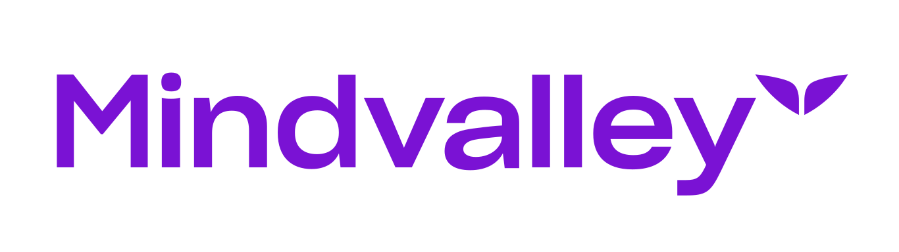

CurriculumThe full curriculum and scripts for the opening masterclass and the two-evening live accelerator with Daniel Priestley — recorded at Mindvalley University. How to position yourself, manufacture demand, and build a business that grows customers on purpose.
Prepared by Gareth Winter, Mindvalley Creative Director & Head of Content — for Daniel Priestley.
The single idea that runs through everything Daniel teaches: only oversubscribed businesses make a profit. Profit is not a reward for working hard — it is what happens when demand outstrips supply. Most founders are supply-side: they build, then hope. The science of growing customers is becoming demand-side — manufacturing buyers first, then delivering value with AI doing the heavy lifting.
One arc across three touch-points: the masterclass opens it (prove the idea, deliver one shift live). Day one makes you the person they choose (positioning, intellectual capital, Key Person of Influence). Day two makes you oversubscribed (the demand engine, the repeatable week, the AI workforce, a 12-month plan they leave holding).
A value-first session that proves the core idea — demand, not product, decides who wins — and delivers one felt shift, then warmly points to the accelerator.
Three sessions: reinvent the business AI just made possible, find the game you can win, and position yourself as the Key Person of Influence in your niche.
Four sessions: the demand-side shift, signals before sales, the perfect repeatable week, your AI workforce — then build your 12-month customer-growth plan live.
A soft, value-first session that earns trust and delivers one felt shift — the move from chasing customers to having them come to you — then warmly points to the accelerator. Host-led intro, Daniel teaches. No on-camera pitching: the shift does the selling. Structure below; the full word-for-word script is one click away.
~40 min teaching + ~20 min Q&A · Soft on-ramp to The Science of Growing Customers accelerator (18 & 19 July). No price pitch on camera.
HOST: Welcome in — wherever you are in the world, whatever time it is, take one breath and just land. You made it. You're here.
And I don't know exactly how you found your way into this room. Maybe a friend sent the link. Maybe you've followed Daniel for years. But I know why you're here. You're here because you've got something good — a product, a service, a skill — and somewhere inside you there's a quiet frustration: why isn't this growing faster? Why am I working this hard and the customers still trickle in?
If that landed — even a little — drop a "yes" in the chat. I want to see who's really in the room tonight.
HOST: Look at that — yes from Sydney, London, São Paulo. Beautiful. Let me tell you who's about to teach you. Daniel Priestley has built seven businesses, three of them past eight figures. He took a group of ordinary time-for-money agencies and turned them into tech companies that went from about $8 million to $80 million. He built ScoreApp — 150,000 customers, valued at over $50 million. He bootstrapped his first company from zero to $1.3 million on a credit card, with no audience and no brand. And he's helped people like Lucy — who at 70 documented her expertise into a $5-million tech business.
Here's the thread through all of it: it was never about having the best product or the biggest audience. It was about one thing, and Daniel's going to give it to you tonight. Daniel — over to you.
DANIEL: Thank you. It's wonderful to be here. I've spent 25 years as an entrepreneur, and the backdrop the whole time has been disruption — the dot-com crash, the financial crisis, Brexit, a pandemic. I've had wonderful partnerships and partnerships that fell apart. I've had the ups and the downs. So I'm not going to stand here and pretend it's been a straight line.
But early on I learned something that changed everything — and I learned it at 19, from my first mentor. We launched a business and did six million dollars in our first year, and it wasn't because we had a better product than anyone else. It was because we understood one principle that most business owners never learn.
DANIEL: Here's the problem I see everywhere. Most business owners are working incredibly hard on the wrong side of the equation. They pour everything into the product — making it better, adding features, perfecting the service — and they assume that if it's good enough, customers will come. Then they're confused and exhausted when they don't.
And the little voice says: "Maybe I'm just not good at marketing." "Maybe I need a bigger audience first." "Maybe I'm too small, or too late, or I missed my moment." "I tried ads once and it didn't work." If any of those voices are yours — you're completely normal, and you're completely wrong. None of those is your real problem. Let me show you what is.
DANIEL: Here's the rule almost nobody taught you. You don't have a product problem. You have a demand problem. And here's the principle underneath it: only oversubscribed businesses make a profit. Profit is not a reward the universe hands out for working hard. There is no profit god. There is only demand and supply tension. When demand outstrips supply, you're profitable. When supply outstrips demand, you discount, you struggle, you burn out.
The bullshit rule we've all swallowed is: "Build a great product, work hard enough, and customers will come." They won't — not reliably. And the common enemy keeping that rule alive is the grind-harder, hustle culture that tells you the answer to slow growth is always more effort, more features, more hours. It isn't.
DANIEL: Ninety percent of entrepreneurs are what I call supply-side: they think their business exists because they have something to sell. So they build first and hope. The most successful founders are demand-side: they know their business exists because someone wants to buy — so they manufacture the buyers first. Tonight I'm going to flip you from supply-side to demand-side. And you'll feel it in the next fifteen minutes.
DANIEL: If only oversubscribed businesses make a profit, then your job isn't to make more — it's to create more demand than you can satisfy. And the beautiful part: you don't need a huge audience to do it. If you had a million followers but could only take twelve coaching clients a year, you'd make a fortune, because demand would wildly outstrip supply. So let's engineer that tension on purpose.
DANIEL: Most people do it backwards. They build the thing, then stand in the market screaming "buy my stuff!" Flip it. First make your market, then make your sales. And the practical version of that is a rule I live by: first get signals, then get sales. I will not sell to anyone until they've signalled they want me to.
A signal is small and low-risk: joining a waiting list, booking a workshop, completing a scorecard, requesting an info pack, replying "yes, send me details." When you collect signals first, three things happen. You find out who actually wants it before you build or push. You create visible demand that makes people want in. And you get to walk through a door that's already open instead of kicking at a closed one.
DANIEL: Picture a business coach who delivers a brilliant talk to 300 people, then says: "Each year I take on just ten clients. If tonight resonated, signal that you're interested and I'll see if you're a fit." Three hundred people felt connected; ten spots exist. Instantly oversubscribed — no discounting, no chasing. That's the whole game in one move: build connection, name your capacity, ask for a signal.
DANIEL: Drop your capacity number in the chat. ... Look at that. Some of you just realised you've been screaming "buy my stuff" for years when you should have been quietly asking "are you interested?" That feeling — that's the demand-side switch flipping on. Agreed?
DANIEL: So here's what just happened. You learned that you don't have a product problem, you have a demand problem. That only oversubscribed businesses make a profit. That the fix isn't working harder on supply — it's manufacturing demand by making your market before you make your sales. And you wrote your first signal.
From here there are two paths. Path one: you close this, go back to building and hoping, keep pushing on the supply side, and keep riding the feast-and-famine that comes with it. Path two: you build the whole demand engine — the connection system, the repeatable weekly campaign, the product ecosystem, and the AI workforce that runs it — so that being oversubscribed becomes normal, not lucky.
HOST: Daniel, that was extraordinary — thank you. Here's the thing: tonight you got one shift and one move. Over two evenings at Mindvalley University, Daniel takes you through the entire system — eight hours, live: positioning yourself as the Key Person of Influence people choose, then building the demand engine that keeps you oversubscribed all year, with AI doing the heavy lifting. You'll leave with a one-page, 12-month customer-growth plan in your hands.
It's called The Science of Growing Customers, on the 18th and 19th of July. If tonight resonated, that's where you build the whole thing. We'll drop the details below — no pressure, just an open door.
DANIEL: Let's take your questions. And as we do — what was your number one light-bulb moment tonight? Put it in the chat. ... "I've been supply-side this whole time." "Signals before sales." "I don't need a bigger audience, I need more demand than supply." Exactly. That's the shift. Keep it — and remember, you don't have to do everything at once. Be a directionalist, not a perfectionist. Just move in the right direction.
Positioning before promotion. Before anyone can grow customers, the market has to know who they are and why they're valuable. Day one moves the room from "I sell time for money" to "I'm the Key Person of Influence for a game I can win." Structure below; the full session scripts are one click away.
DANIEL: Thank you, it's wonderful to be here, and I can feel the energy in this room. I've spent the last 25 years as an entrepreneur, and the backdrop the whole time has been constant disruption — the dot-com bubble, the global financial crisis, Brexit, the pandemic. And honestly? I have never felt the way I feel right now. I think we have the biggest, most incredible technology that's ever come along, and it's making things possible that were never possible before.
Some people are feeling a little bit terrified. That's justified. And a lot of people are feeling opportunistic and optimistic — and that's also justified. Over the next two evenings I'm going to give you the frameworks I use to run a portfolio of businesses, take my kids to school every day, and still grow customers on purpose. This is the science of building a business that works.
DANIEL: Here's where we're going. Tonight is about positioning — becoming the one they choose. Tomorrow is about demand — becoming oversubscribed. By the time you leave, you'll have a plan to grow customers every single week. Let's begin.
Shift advanced: Mindset. From "I'm late and threatened" to "I'm early and everything is an opportunity."
Pillars hit: Critical Reflection · Active Study & Writing · Rapid Implementation.
DANIEL: Let's go back to first principles. Why does an entrepreneur exist at all? An entrepreneur exists because they can see a way to do something better, faster, cheaper, or with more emotional benefit than what already exists. Hold that. The beauty of AI is that everything in the whole world is now a new opportunity. Every business that exists could be done better, faster, cheaper, with more emotional benefit if AI were used well. Which means the entire world is up for grabs.
Society reflects technology. We mixed tin and copper and got the Bronze Age. The British invented the limited liability company in 1855 — not even a technology, just a new agreement — and it transformed the world. We're leaving the industrial age and entering the age of intelligence. And when a new technology arrives, the world reorganises around it.
DANIEL: Look at this. You are not behind the curve. You are not late to the party. You are ridiculously early. If you're in this room, you're going to be fine. You're going to invent things, create things, connect with people, and do wonderfully well.
DANIEL: So here's the first frame I use with all my businesses. I assume my business is already dead. Whatever business you walked in here with tonight — I want you to treat it as dead. It needs reinventing. And that's an empowering idea, because most people feel their business isn't as good as they'd like. This is your permission to keep the best bits and reinvent the rest — at light speed.
But you can't do that if you're holding on. Holding onto "I have to sell time for money." Holding onto "I have to physically meet clients to give them value." Holding onto "the only way to earn more is to work harder." Drop those. Maybe you could work a lot less and earn a lot more if you did it differently.
I'm not asking you to do anything I haven't done. When ChatGPT arrived, I had a group of time-for-money agencies. One by one I turned each into a technology company. Skill Online became ScoreApp. RethinkPress became BookMagic. Those four businesses went from being worth about $8 million to $80 million. Same core essence — reinvented.
DANIEL: There's something called the Jevons Paradox: new technology produces unexpected results. Everyone said Zoom would kill air travel. Instead people made new connections all over the world — and then wanted to go meet them. Business-class travel has never been more vibrant. YouTube was going to kill television; Hollywood lost 25,000 jobs, but YouTubing created 550,000. My mother was a journalist — journalism was "killed" by content creation, and now there are twenty times more people making a living from content than ever made it from journalism.
New technology is always predicted to wipe things out. In reality it creates whole new categories of opportunity. You don't have to fear this. You just have to step through it: use AI daily, embed it in your processes, build AI-enabled products.
DANIEL: See AI as a new playground. Kids at a new playground aren't scared — they're excited to try the slides. As adults we see disruption and think "that's going to ruin my playground." I want you to remember what it felt like to be excited to play. This is the most exciting playground we've ever been handed.
Shift advanced: Mindset → Show-Up. From "I'm average competition" to "I'm extraordinary at one narrow thing."
Pillars hit: Critical Reflection · Active Study & Writing · Altered States & Insight (the nature reflection).
DANIEL: The industrial age ran on normal distribution: average people, average jobs, average pay. The digital age runs on the power law: a small group dominates and earns extraordinary amounts. That sounds brutal — but AI brings something wonderful with it: the atomisation of industries into micro-niches. You don't have to win the whole market. You can be at the very top of the power law for something tiny and specific.
Steven Box is the Michael Jordan of a tabletop game called Warhammer — and he gets paid a fortune to turn up and play. A friend of mine, Driver 61, was a racing driver and now runs track days; 1.4 million subscribers, living his best life, top of the power law for one thing. My friend Leanne built an agency for AI-enabled executive assistants in the Philippines, wrote the book, and owns that niche.
DANIEL: So stop seeing yourself as average. See yourself as extraordinary at a very narrow thing. Define a game you can win.
DANIEL: Your personal brand stands on three pillars: your intellectual capital, your ideal customer persona, and your product ecosystem. Tonight we mine the first one. Intellectual capital is your origin story, your triumphs and disasters, your playbooks — the things only you can say because of your last 5, 10, 15 years. When you plug that into AI, it lets you create products and services that are unmistakably yours.
Steve Jobs said we connect the dots looking backwards. Don't wait until the end of your life to do it. Do it this week. The most powerful question to ask is: "When did I last do something special — that would interest a certain type of person, where I can quantify the result, and explain it step by step?" Those are your proof stories.
Shift advanced: Show-Up + Tool Kit Upgrade. A repeatable pitch and a five-part influence system they keep using.
Pillars hit: Active Study & Writing · Social Learning & Discourse · Rapid Implementation.
DANIEL: Quick question — the Google "G", in colour, what colour is the G? People shout red, green, yellow, blue. It's blue. It's always been blue. The point: we don't remember corporate logos and we don't trust corporate brands the way we used to. We love people. Richard Branson has far more followers than Virgin. Three million people follow Steven Bartlett personally; only 45,000 follow Diary of a CEO as a brand. In the age of AI, being known is an asset. So we build a personal brand.
And a personal brand doesn't mean draping yourself over a Ferrari. It means being the person who takes your ideal customer on a journey and guides them through it. When people meet you, they instantly file you as one of three things: a newbie, a worker bee, or a Key Person of Influence. Your whole job is to be positioned as the Key Person of Influence for getting the result your customer wants.
DANIEL: You become a Key Person of Influence by owning a signature move — a signature piece of intellectual property people know you for. Fifteen years ago mine was becoming the Key Person of Influence for entrepreneurs. Then I wrote Oversubscribed and moved into marketing campaigns. Then 24 Assets for digital businesses. Once you own the signature thing, people happily do all sorts of other things with you.
DANIEL: The difference between a newbie and a Key Person of Influence is the pitch. "I'm a licensed financial adviser in Brisbane" — that's a newbie. A Key Person of Influence runs the framework Name, Same, Fame, Aim, Game:
DANIEL: Positioning runs on five Ps. Pitch — the answer to "what do you do?". Publish — put your ideas into scalable digital assets, because people need roughly seven hours and eleven interactions with your content before they trust you enough to buy. Product — the ecosystem people can buy (we build this tomorrow). Profile — being seen by the right people. Partnerships — borrowing other people's audiences. Do these five things well and you'll change your entire trajectory. Tonight we've nailed the pitch and started publishing. Tomorrow we turn this into a customer engine.
DANIEL: Before we close — what's your number one light-bulb moment from tonight? Call it out. ... "My business is already dead but I can reinvent it." "I need to find something I'm best in the world at." "Personal brands get more cut-through than corporate brands." "I'm not late to the party." Beautiful. That's exactly the shift.
DANIEL: Tomorrow night we take everything you've positioned and we make you oversubscribed. Get some rest — and don't be a perfectionist. Be a directionalist. See you tomorrow.
Now the engine. Day two turns positioning into a predictable flow of customers: the demand-side mindset, signals before sales, the perfect repeatable week, and an AI workforce that does the work. Everyone leaves holding a 12-month customer-growth plan.
DANIEL: Welcome back. Let's celebrate a quick win first — call out one small thing you did since last night. A pitch you rewrote, a proof story you found, a post you published. Little wins keep your brain on track. Last night we made you the one they choose. Tonight we make demand outstrip supply. This is the science of growing customers.
Shift advanced: Mindset. From supply-side ("I have something to sell") to demand-side ("I have someone who wants to buy").
Pillars hit: Critical Reflection · Active Study & Writing.
DANIEL: This is the root cause of profitability. Demand must outstrip supply. There is no profit god handing out profit fairly — there is only demand-and-supply tension. If you had a million followers but could only take 12 coaching clients a year, you'd make a fortune. If you sell something infinitely scalable that everyone has, the price falls to zero. 90% of entrepreneurs are supply-side: they think their business exists because they have something to sell, so they go to the factory first. A demand-side entrepreneur thinks their business exists because someone wants to buy — so they launch a waiting list first. Demand-side founders win nine times out of ten. Your job is to manufacture buyers.
DANIEL: To create the imbalance, name your official capacity — the number of customers you can serve while keeping them delighted. A restaurant for 50 is delightful; cram in 80 and everyone suffers. "Unlimited" capacity means unlimited bananas with limited buyers — price goes to zero. So pick a number: 10 clients, 600 seats, 56 patients a month. That constraint is what makes you profitable.
DANIEL: Picture a line. One end is competition, the other is connection. The more connection, the less competition. I wouldn't trade my kids for "better-behaved" ones — connection erases competition. So we don't chase sales; we build connection first. A business coach delivers a brilliant three-hour talk to 300 people, then says, "Each year I take 10 coaching clients." Three hundred feel connected; ten spots exist. Instantly oversubscribed — no discounting required.
Shift advanced: Tool Kit Upgrade. A repeatable signals-then-sales method and a four-part product ecosystem.
Pillars hit: Active Study & Writing · Rapid Implementation.
DANIEL: Most people scream "buy my stuff" at a cold market. Flip it: first get signals, then get sales. I won't sell to anyone until they've signalled they want me to. Strong signals: register on a waiting list, book a workshop, stay after the talk, join a discussion group, complete a scorecard, request an info pack. At my live workshops I'd offer a coffee break — "if you'd like me to put my sales hat on, come back and sit down; if not, head off with my thanks." Sixteen of twenty would come back, knowing fifteen others were interested. Instant tension.
DANIEL: People buy because their current reality doesn't match their desired reality, there are obstacles in the way, and they've tried things that didn't work. You're the path of least resistance from here to there. While warming people up, ask more questions and collect more data, so you understand exactly what's driving each buyer.
DANIEL: The conditions are logic, emotion, and urgency. Logic: they can justify the ROI on a spreadsheet. Emotion: they can tell the story of why life is better after buying. Urgency: a real fear of missing out. Logic and emotion are the engine; urgency is just the spice you sprinkle on top.
DANIEL: Around every piece of signature intellectual property, build four products. Two for growth: a gift (free, scalable — your podcast, YouTube, a free scorecard) and a product for prospects (a small commitment of time and data, not much money — a book, an assessment, a workshop). Two for profit: a core offering (gold / silver / bronze implementation) and a product for clients (the ongoing subscription or relationship). Skip growth products and you starve; skip profit products and you can't monetise. The profit is in the whole ecosystem.
Shift advanced: Habit + Tool Kit Upgrade. A marketing rhythm they run every week, forever.
Pillars hit: Active Study & Writing · Rapid Implementation.
DANIEL: I learned this at 19 from my first mentor, John: a weekly campaign, a quarterly campaign, and an annual big message. We launched and did $6M in year one. I've used it for 25 years. Three layers:
DANIEL: Run your week on one dashboard: LAPSE — Leads, Appointments, Presentations, Sales. When I launched my first company I put a $6,300 ad on a credit card every Sunday; it brought 70 people to a Wednesday workshop; ~10% bought at $2,250. We ran that identical week 43 times — $1.3M revenue, $400K profit, no audience, no brand, just a repeatable week. ScoreApp's first year did the same and now does over £500K a month. The magic isn't novelty. It's repetition.
Shift advanced: Tool Kit Upgrade + Lifestyle. Leverage so a tiny team grows customers like a big one.
Pillars hit: Active Study & Writing · Rapid Implementation.
DANIEL: There are only two sides to any business: speed to market (reaching customers and getting them excited) and speed to value (delivering what they want and delighting them). All you orchestrate is those two — and AI accelerates both. With Neutonic, a focus drink, we asked: what is the customer really trying to achieve? A two-hour focus session. So AI tells that story to the market and ships a focus plan, a goal-setting chatbot, and playlists with the can. Even buying a drink kicks off an AI agent working on the customer's behalf.
DANIEL: A farmer knows when and what to plant (wisdom), plants the seed (initiation), lets the soil automate the growth, then harvests and takes it to market. We now live on digital soil. Your job is steps 1 and 2 — know the problem worth solving and plant the prompt — and steps 9 and 10 — turn the output into a product and take it to market. Steps 3 to 8, the technology does. And you have a new workforce to do it: I call them Atlanteans — AI agents who'll work 24/7, for free, with PhDs, eager to help.
DANIEL: You can't build the power plant, but you can build the blender that plugs into it. You won't build ChatGPT or Claude — but you can build a business that runs on top of them. The formula: collect customer data → mix it with your intellectual capital → run it through generative AI → return it inside an app or customer portal. That's ScoreApp, valued at over $50M with 150,000 customers. That's BookMagic, AwardsApp. Your IP plus AI, wrapped in a portal.
DANIEL: Forget the old moats — big labour forces, huge capital, a giant corporate brand. In a fast-moving world, sitting in a castle is foolish. Be James Bond instead: adaptive, dynamic, ready for any situation. The new defensibilities are intellectual property, media, data and technology — the work that happens above the time-for-money line. Five people and AI can build what used to take hundreds.
Shift advanced: Show-Up + Habit. A concrete plan and a commitment to run it.
Pillars hit: Active Study & Writing · Social Learning & Discourse · Rapid Implementation.
DANIEL: Every venture moves through the same six steps, and AI accelerates each one:
These steps didn't change because AI arrived — they just got faster. You can be a serial entrepreneur (one business at a time, each bigger) or a plural entrepreneur like me — several projects at different stages at once, each with its own value-creation loop, all manageable because AI does the work.
DANIEL: Zoom out. Humans just synthesised all of human knowledge into one technology and handed everyone a new level of intelligence — and the ability to automate the jobs they never liked. That can't be a bad thing. It'll be rocky, some feathers will be ruffled, some old businesses will be disrupted. But the people in this room are going to guide their corner of the world in the right direction. Approach it with hope and optimism. Prepare for disruption, expect the best. Be a directionalist, not a perfectionist. Pick one or two things from these two nights and keep moving in the right direction — and have fun, because the more fun you have in business, the more money you make too.
Real, verifiable results from Daniel's own portfolio and the people he's taught — drawn directly from his Mindvalley sessions. The pattern is consistent: document your intellectual capital, build the ecosystem, become oversubscribed.
Verbatim examples from Daniel Priestley's Mindvalley material (AI Summit 2026; Entrepreneurship Mastery — Oversubscription, 5 Pillars of Influence, Signature Positioning). Cited so every claim can be traced back to Daniel.
Four time-for-money agencies, reinvented into tech: ~$8M → ~$80M.
"We took the core essence and put it into ScoreApp, BookMagic and others."
ScoreApp: 150,000 customers, valued at over $50M.
"It's not that I created AI — I created something that runs on AI." Built on the AI-wrapper formula.
At 70, Lucy built a $5M-valuation tech business.
30 years in publishing, documented into BookMagic with one technologist, raised at a $5M valuation.
From awards expertise to AwardsApp.ai, raised at ~$5M.
15+ years winning awards, a book called Win, an AI portal built with her brother.
Zero to $1.3M and $400K profit — on a credit card.
"No audience, no brand. I ran the same perfect repeatable week 43 times." Bootstrapped at 22.
A software company warmed to a ~$72M valuation.
"Software is my bread and butter — we apply oversubscription to features, upgrades and even the exit."